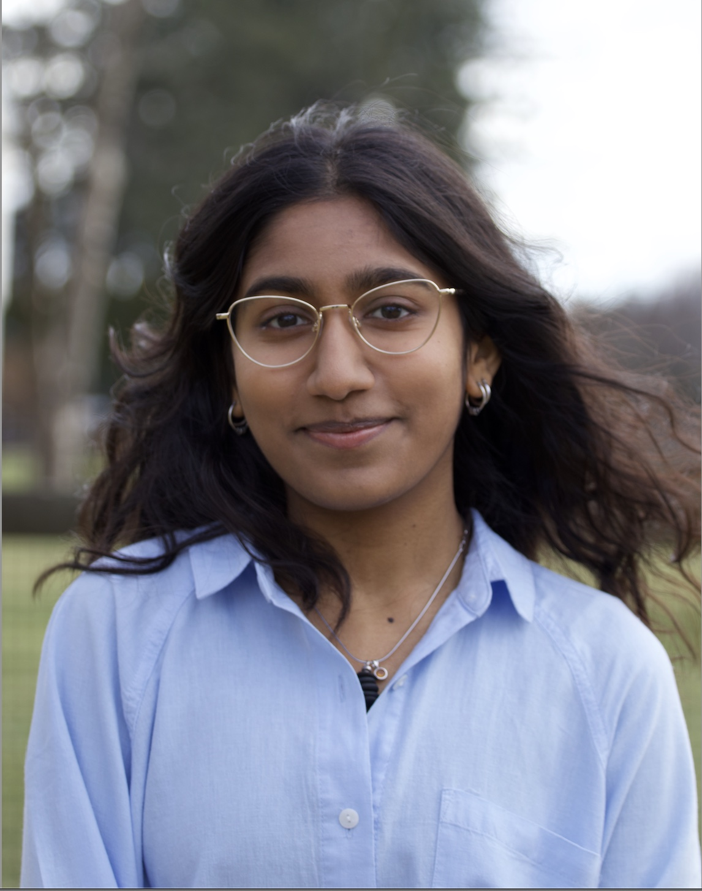

In-context learning
How does the information and ordering in a prompt shape what a language model learns and predicts?
Computer Science PhD student
I study how language models learn, reason, and stay reliable.
I’m a PhD student in Computer Science at William & Mary, where I work on in-context learning, trustworthy AI, and applications of machine learning in biomedicine.

Based in Williamsburg, Virginia
01 / About
I’m a Computer Science PhD student at William & Mary, working with Professor Yanfu Zhang. My research asks how large language models adapt to information, resolve conflicting evidence, and communicate uncertainty. I’m also interested in bringing LLM problems to scientific and biomedical problems.
Before William & Mary, I studied Computer Science and Mathematics at Cornell University, where I continued on to a master’s in Computer Science. Across my work, I’m drawn to methods that make machine learning more useful, interpretable, and dependable.
02 / Research
How does the information and ordering in a prompt shape what a language model learns and predicts?
How can models recognize conflicting or changing information and signal when their answers are less reliable?
How might in-context learning and uncertainty estimation support scientific tasks such as protein structure modeling?
03 / Publications
A selection of papers and ongoing work. For a complete list, see my CV.
EMNLP Findings · 2026
ACL Findings · 2026
IEEE BIBM · 2020
04 / Experience
Aug 2025 — present
Yanfu Zhang Lab · William & Mary
Studying how language models handle conflicting information, measure uncertainty, and support biomedical applications.
Sep 2026 — present
NASA Langley Research Center · Computer Vision Lab
Continuing development of a spatio-temporal graph network for aerial object classification and detection; preparing ongoing work for submission.
Jun — Aug 2026
NASA Langley Research Center · Computer Vision Lab
Designed a spatio-temporal graph network on frozen DINOv2 features to classify aerial objects from multi-camera flight-test video.
Sep 2022 — Aug 2026
David Bindel Lab · Cornell University
Built Gaussian process and constrained optimization methods for function estimation and optimization.
Jun — Aug 2024
Avi Ma’ayan Lab · Icahn School of Medicine at Mount Sinai
Built a web application to explore age-related gene-expression changes across tissue types using RNA-seq data.
Sep — Dec 2024
Bharath Hariharan Lab · Cornell University
Explored machine-learning approaches to assist annotation by clustering unlabeled bird data in a learned feature space.
05 / Education & teaching
2025 — present
William & Mary · Williamsburg, Virginia
2024 — 2025
Cornell University · Ithaca, New York
2021 — 2024
Cornell University · Ithaca, New York
I’ve been a teaching assistant for Modern Programming Fundamentals and Fundamentals of AI/ML at William & Mary, and Introduction to Natural Language Processing and Computer Systems Organization and Programming at Cornell.
06 / Contact
I’m always glad to hear from fellow researchers, students, and potential collaborators.
Email me